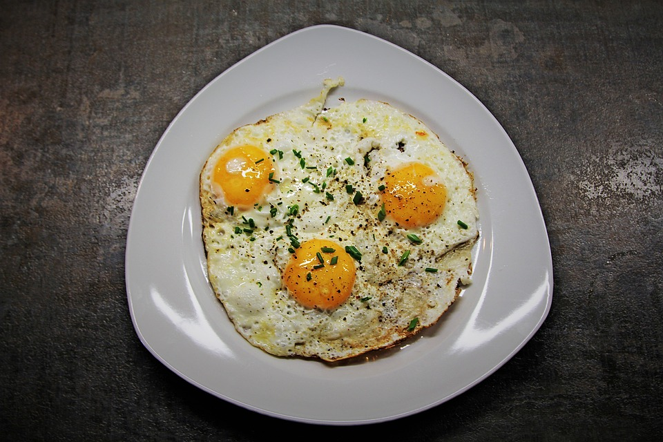

Fried Egg

Description
Fried Egg is a good choice of breakfast. Tell you a secret, it's amazing with rice.
Ingredients
- 2 eggs
- a small spoon of salt
- some olive oil
- a small spoon of hot water
Steps
- Preheat the pot
- Pour the olive oil in
- Put the egg in from the side of the pot
- 30 seconds later, put a spoon of hot water in.
- After it dry, spill the salt in.
- Turn over the egg, wait for it about 15 second, and it's done!